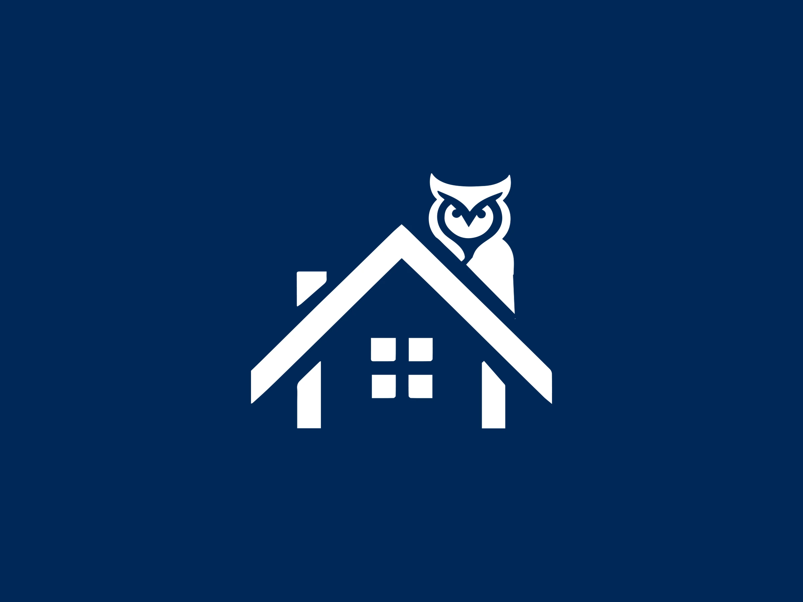
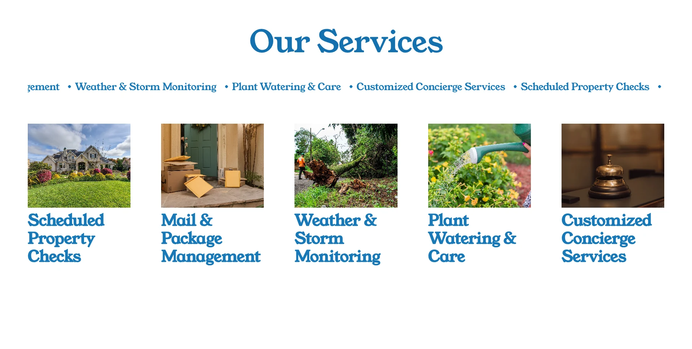

Logo, brand development, website and copy for Solebury Home Watch Services, a licensed, insured home watch service in Bucks County, Pennsylvania that looks after houses while their owners are away.
Work includes: logo and emblem, brand development, website design, copywriting.
Logo
an owl keeping watch from the roof, in tall, emblem, stacked and wide versions

Website
services, testimonials and the owner’s story on one page
